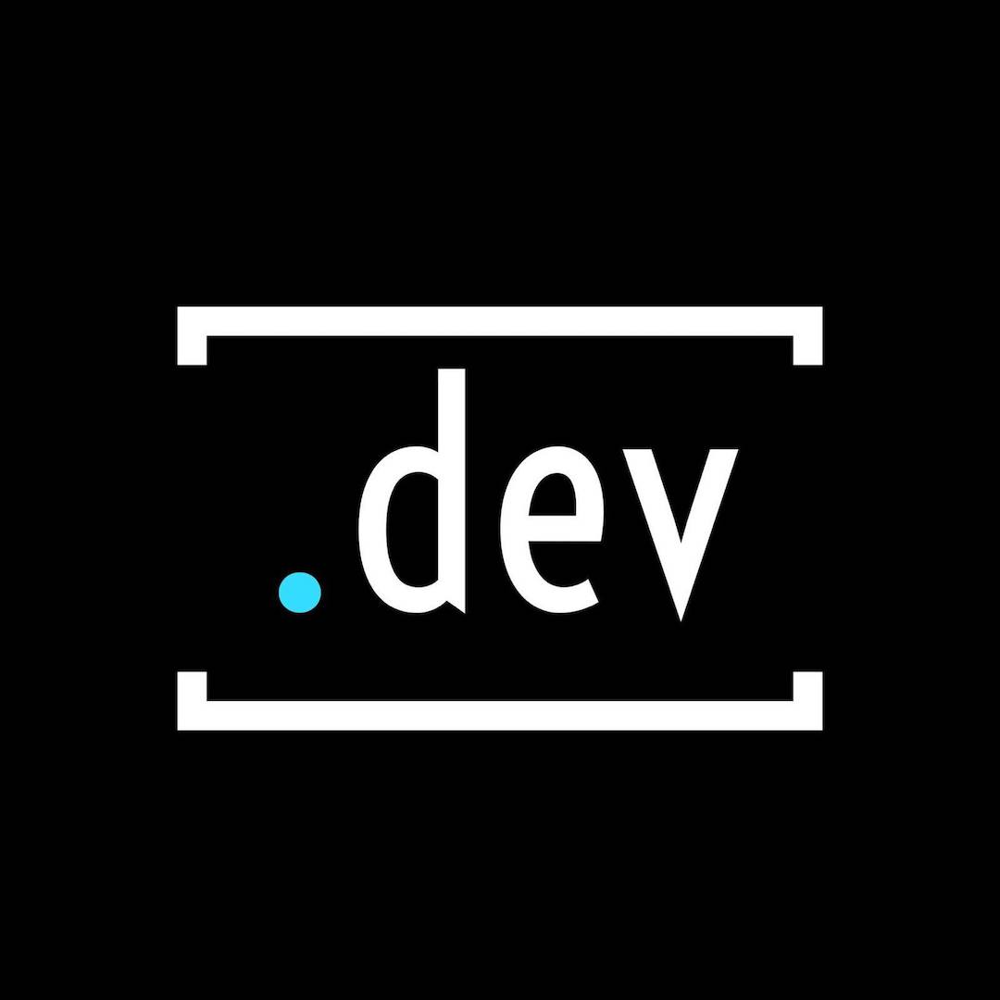
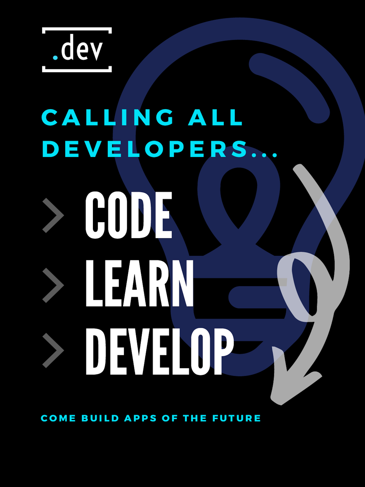
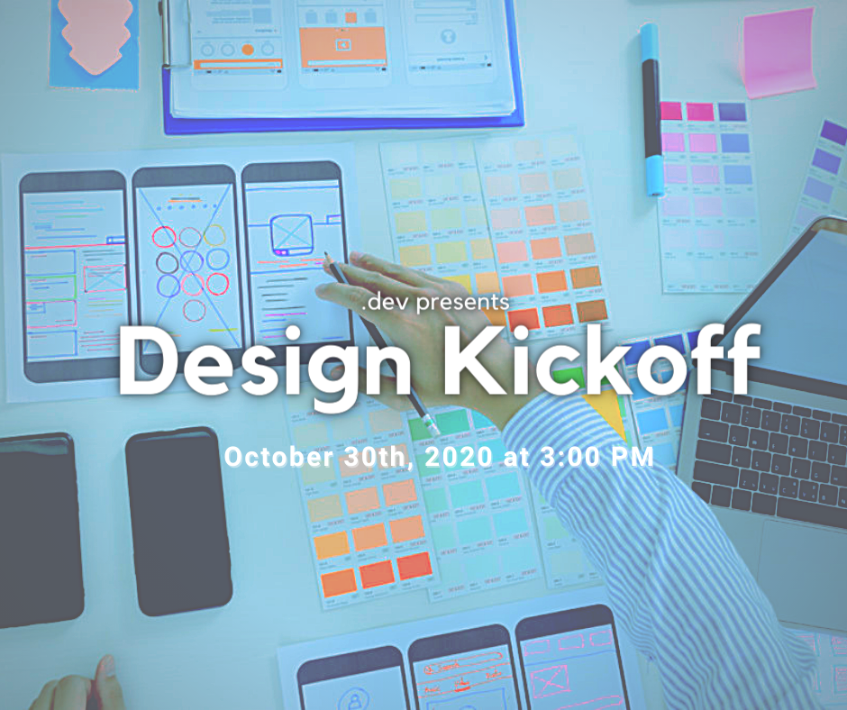
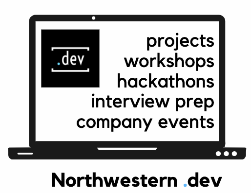
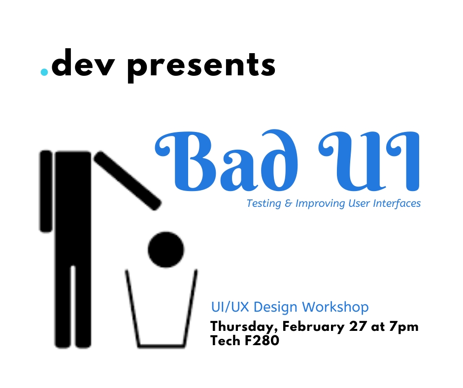
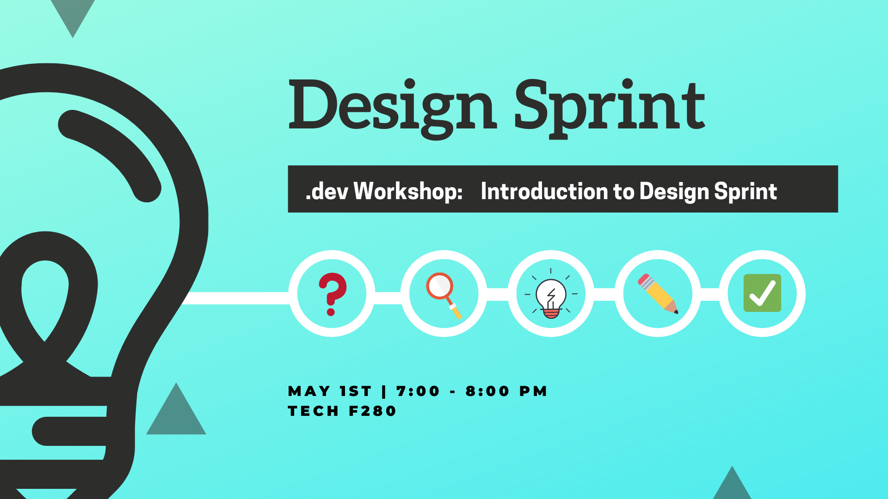
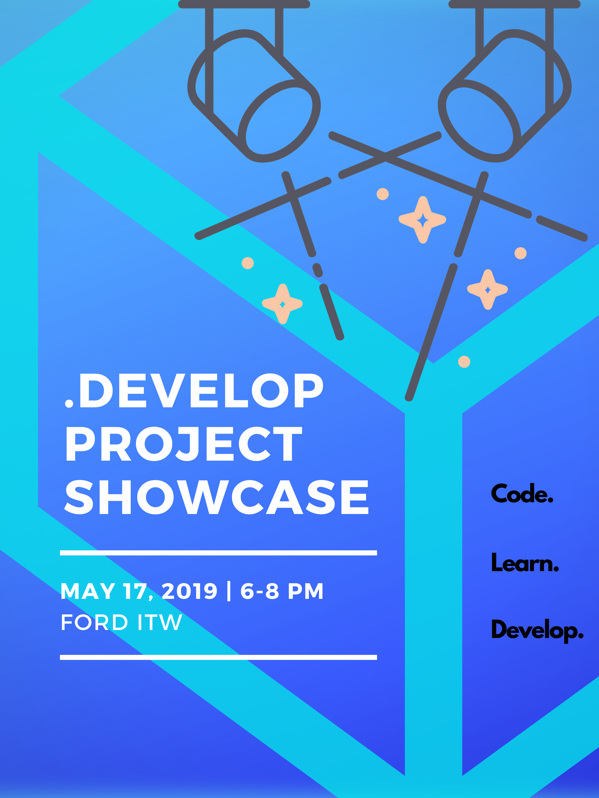
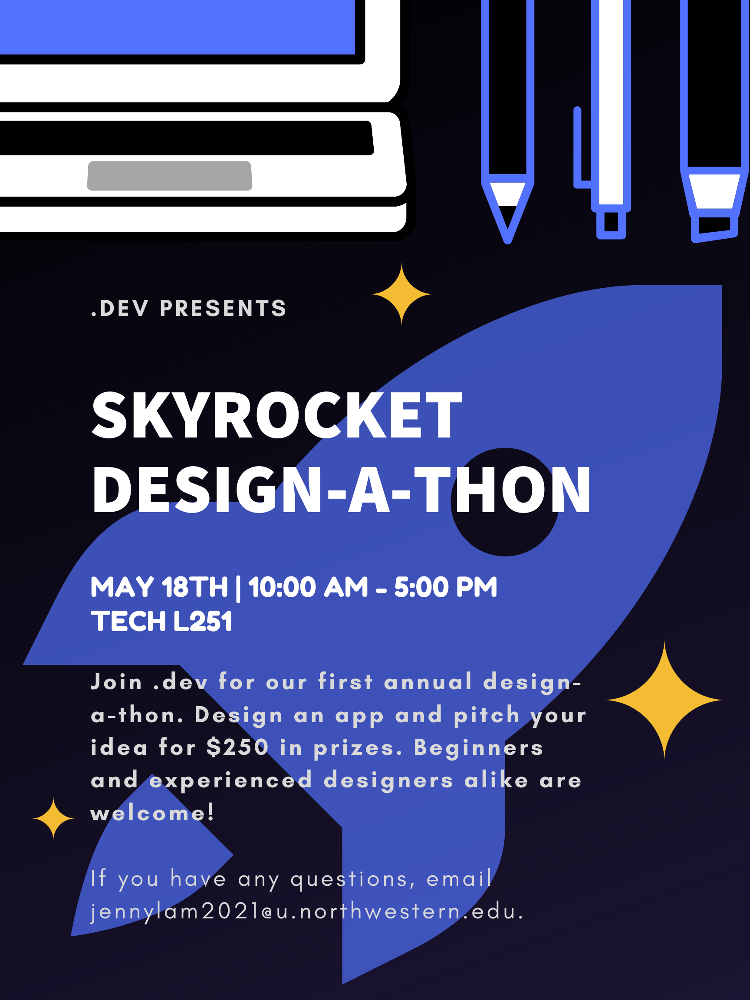

×
.dev
Northwestern .dev is a software development focused student organization on campus. As the Design Lead, I planned and hosted workshops on UI/UX and interface design to help students working on their app development projects. I also assisted the .dev exec board with planning events such as hackathons, project showcase, and carerr programming.







